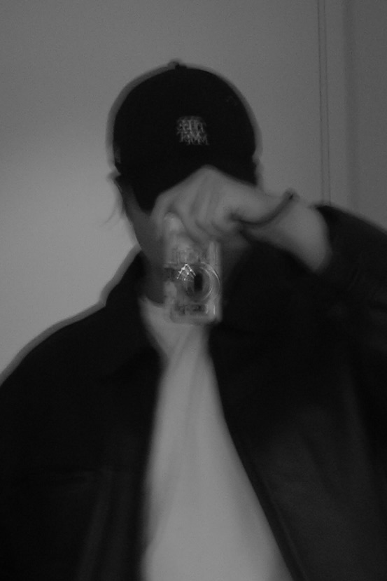

Tetsuo Hayashi
In my creative practice, I question how things are constructed, perceived, and taken for granted. This approach has been shaped through professional experience in international and cross-cultural contexts, as well as through my studies in Product Design in Milan and Material Futures in London.
I am interested not only in surface form, but in the underlying structures, meanings, and relationships that shape our understanding of the world. By reconsidering what is assumed in everyday life, I explore how perception shifts and how alternative viewpoints emerge.
Drawing has been a natural act for me since childhood, and photography developed as its extension. Through observation and reframing what is considered ordinary, I investigate alternative ways of seeing. Photography becomes a space to deepen perception, rethink how we relate to the world, and experimentally and experientially explore perspectives beyond established viewpoints.
クリエイティブの分野での活動を通して一貫して向き合い続けているのは、物事の本質を問い、新たな物の見方や価値を見出し、提示することです。この姿勢は、国際的かつ多文化的な環境での実務経験や、ミラノでのプロダクトデザイン、ロンドンでのマテリアル・フューチャーズでの学びを通して培われてきました。
私は、表層的なかたちだけでなく、その奥にある構造や意味、そして物事同士の関係性に関心を持っています。見慣れた日常や風景、当たり前とされている視点や考え方をあらためて問い直すこと。そのプロセスから生まれる認知の変化や、新たな視点の発見を大切にしています。
幼い頃から絵を描くことは自然な行為であり、写真もその延長にあります。物事を観察し、当たり前とされている認識を見つめ直し、異なる視点や捉え方を探求していきます。写真は、世界の見方を再考しながら観察を深め、既存の視点とは異なる見方を実験的かつ体験的に探り、新たな視点を見出していくための実践です。